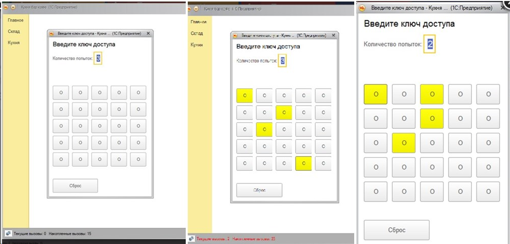

льтернативный способ введения пароля пользователем. Используется уже после начала работы системы. В общем-то, баловство, но, может, идея кому и понравится. Здесь такого не нашел, если есть, поделитесь ссылкой.
Принцип работы очень прост: предварительно пользователю заводится пароль. В данной обработке использована строка с разделителями ";". Этот пароль где-нибудь в базе хранится (можно зашифровать). При создании формы этот пароль достаётся из места хранения и преобразуется в строку. Затем на форме генерируется квадрат (в зависимости от длины пароля - 3*3, 4*4, 5*5) и пользователю предлагается последовательно нажать кнопки. После окончания трёх попыток (или сами поставьте число, какое захотите) работа программы завершается безусловно.
Даже не знаю, куда её можно приспособить. Наверное, подойдёт для быстрой смены кассиров (вместо карточек) в магазине или в кафе.
Генерация пароля не предусмотрена. По умолчанию в коде пароль записан - увидите.
Эта обработка - всего лишь идея. Код открыт - пользуйтесь, как хотите.
